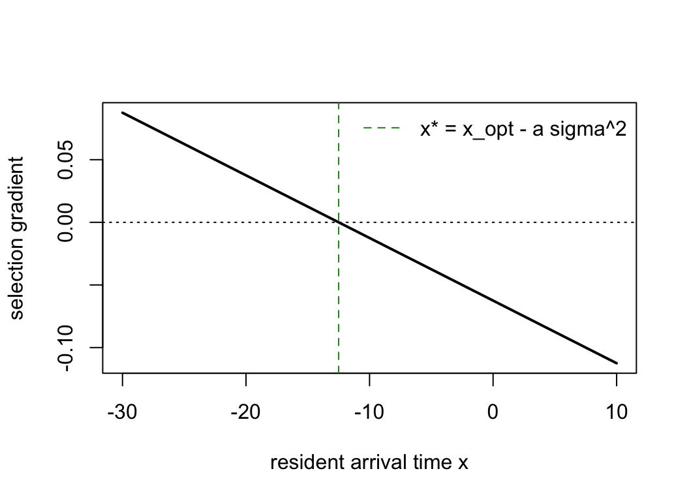

library(regnans)JJ12: the evolution of migratory arrival time
How competition can favour arrival before the seasonal optimum
What the model represents
Migratory birds compete for a fixed number of breeding territories. Arriving early can be costly because conditions are poor, but it also improves an individual’s chance of securing a territory. Arriving at the seasonal optimum would maximise reproduction if there were no competition.
Competition changes that result. Each individual gains by arriving slightly earlier than its competitors, so evolution favours an arrival date before the date that would maximise total population output. This difference between the individual and population optima is an evolutionary tragedy of the commons.
The ecological setting follows Johansson and Jonzén (2012), Game theory sheds new light on ecological responses to current climate change when phenology is historically mismatched. The equations below use the simplified analytic form described by Brännström, Johansson, & von Festenberg (2013), which gives us an exact answer against which to check the numerical solver.
Fitness equations
Competitive ability declines with arrival time x, while reproduction follows a Gaussian curve centred on the seasonal optimum x_opt:
\[ C(x) = e^{-a x}, \qquad R(x) = R_0\,\exp\!\left(-\frac{(x-x_{\mathrm{opt}})^2}{2\sigma^2}\right). \]
With year-to-year survival p, a single resident reaches \(n^\* = K R(x)/(1-p)\). The invasion fitness of a mutant x' (a discrete-time geometric growth rate; \(w = 1\), i.e. log = 0, at the resident) is
\[ w(x') = (1-p)\,\frac{C(x')\,R(x')}{C(x)\,R(x)} + p . \]
The selection gradient is a decreasing straight line, so the model has one continuously stable strategy and no evolutionary branching. Its exact value is
\[ x^\* = x_{\mathrm{opt}} - a\,\sigma^2 , \]
which lies before the population optimum x_opt whenever a > 0.
Example analysis with regnans
a <- 0.125; x_opt <- 0; sigma <- 10
h <- harness_jj12(a = a, x_opt = x_opt, sigma = sigma, R0 = 1, K = 5, p = 0.5)
out <- community_start(bounds(x = c(-40, 40)), harness = h) |>
community_solve_singularity_1D()
c(numeric = as.numeric(out$traits),
analytic = x_opt - a * sigma^2) # should match: -12.5 numeric analytic
-12.5 -12.5 The numerical solution should match the exact result. That known answer makes this model a useful check on the solver. With these parameters, the evolved strategy arrives a*sigma^2 = 12.5 time units before the seasonal optimum.
Selection gradient and convergence
The gradient is positive for arrival times below x* and negative for arrival times above it. Small evolutionary steps therefore move the population towards x* from either side:
xs <- seq(-30, 10, length.out = 60)
grad <- sapply(xs, function(x) {
community_start(bounds(x = c(-40, 40)), harness = h) |>
community_add(trait_matrix(x, "x")) |>
community_demography() |>
community_selection_gradient() |>
(\(comm) comm$selection_gradient)()
})
plot(xs, grad, type = "l", lwd = 2,
xlab = "resident arrival time x", ylab = "selection gradient")
abline(h = 0, lty = 3); abline(v = x_opt - a * sigma^2, col = "forestgreen", lty = 2)
legend("topright", legend = "x* = x_opt - a sigma^2", col = "forestgreen",
lty = 2, bty = "n")
Mismatch grows with the competitive advantage a
Increasing a strengthens the benefit of arriving before competitors. The evolved arrival date therefore moves farther ahead of the seasonal optimum:
sapply(c(0, 0.04, 0.125), function(a) {
h <- harness_jj12(a = a, x_opt = 0, sigma = 10)
as.numeric(community_start(bounds(x = c(-40, 40)), harness = h) |>
community_solve_singularity_1D() |>
(\(comm) comm$traits)())
}) # 0, -4, -12.5 — earlier arrival as competition for territories intensifies[1] 0.0 -4.0 -12.5References
Brännström, Åke, Johansson, J., & von Festenberg, N. (2013). The hitchhiker’s guide to adaptive dynamics. Games, 4(3), 304–328. doi:10.3390/g4030304